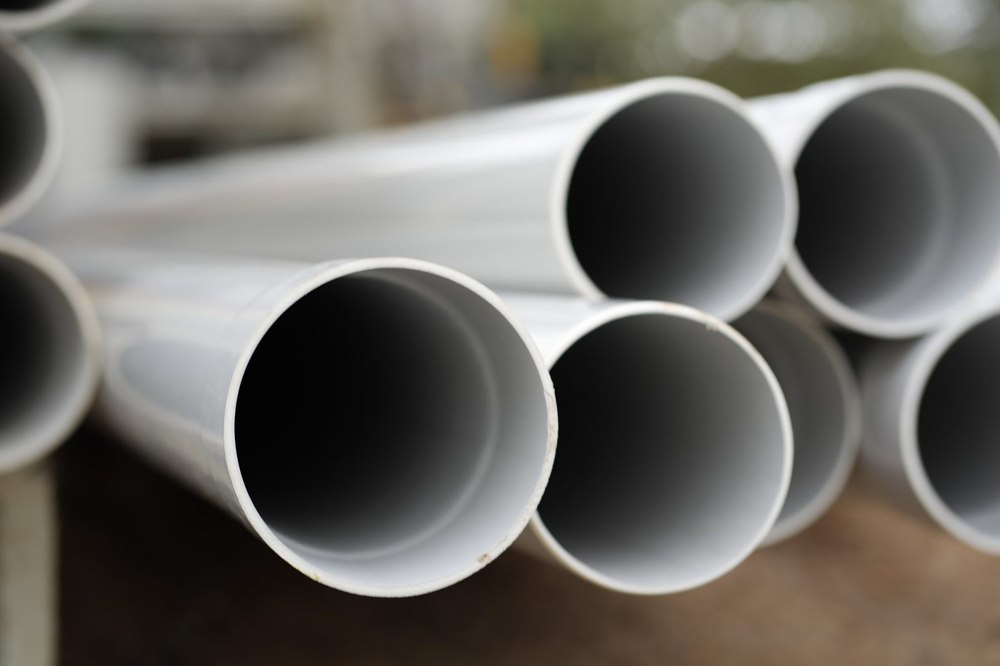

01 / CCTV
CCTV Drain Inspections & Reports
When a drain isn't running right, we put a camera down the line and find out exactly why, without digging up the yard to guess. You get a clear rundown of what we found and what it takes to fix it, and where you need it, a written report with photos and footage for your records, a sale or a builder.
- In-pipe camera survey of sewer, stormwater and sink drains
- Blockage, crack, root-intrusion and collapse detection
- Pipe locating and depth marking above ground
- Written report with photos and footage on request
- Pre-purchase and pre-handover inspections